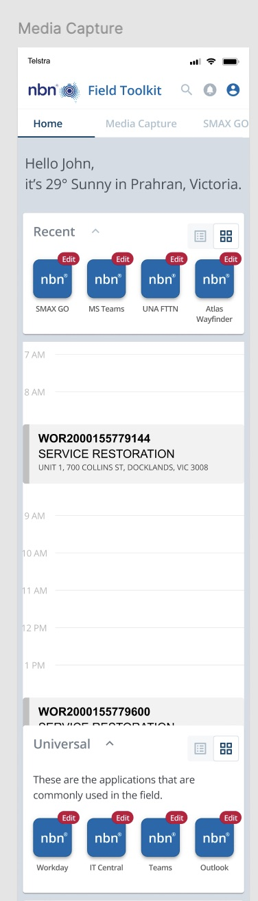
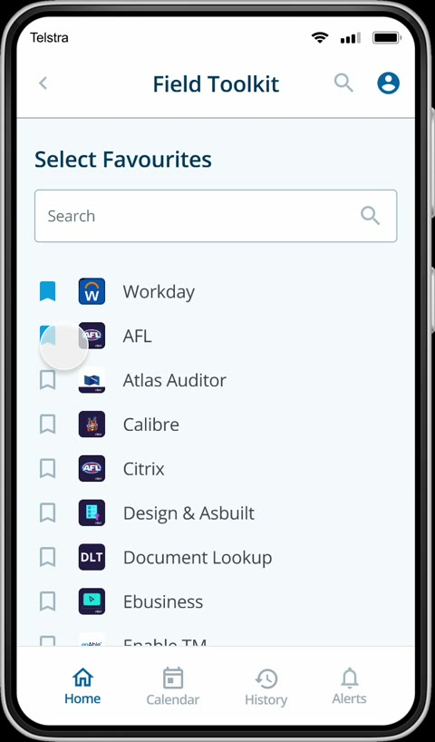
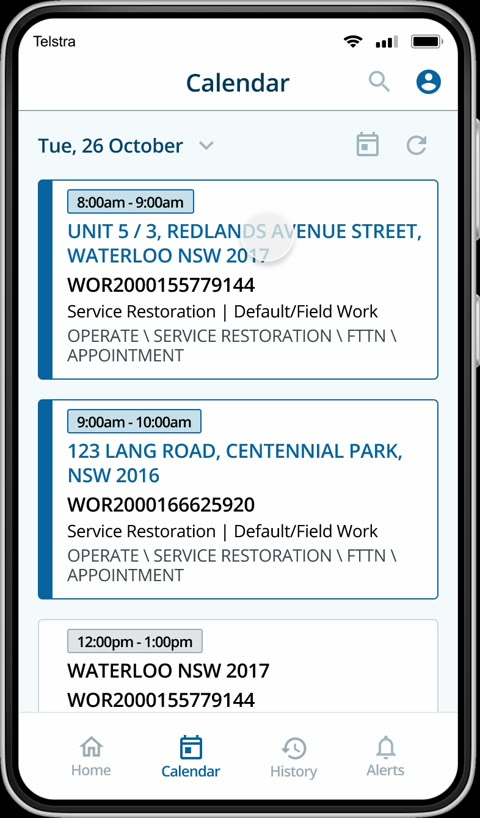
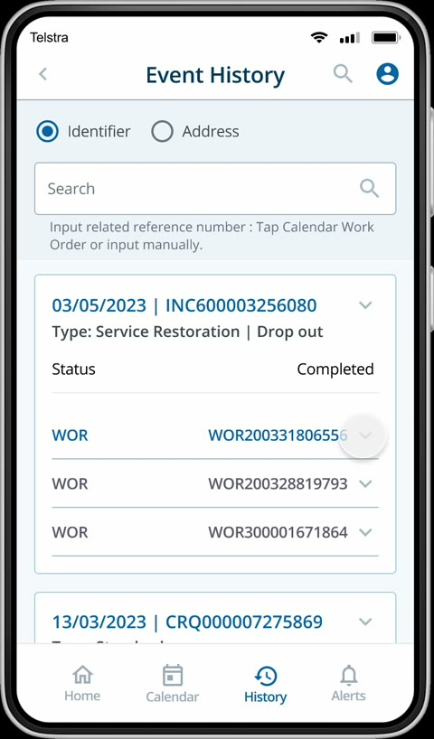
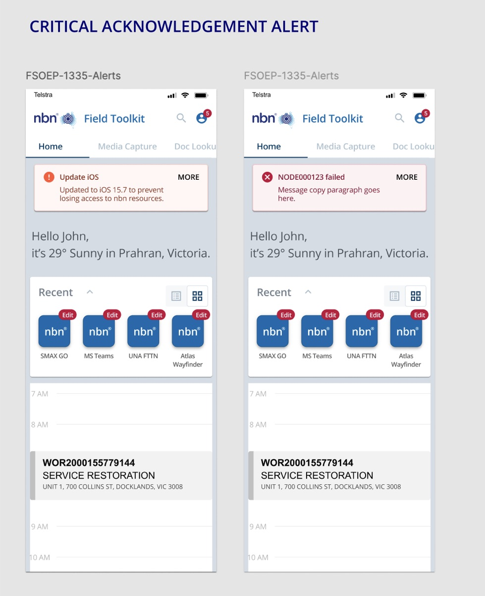
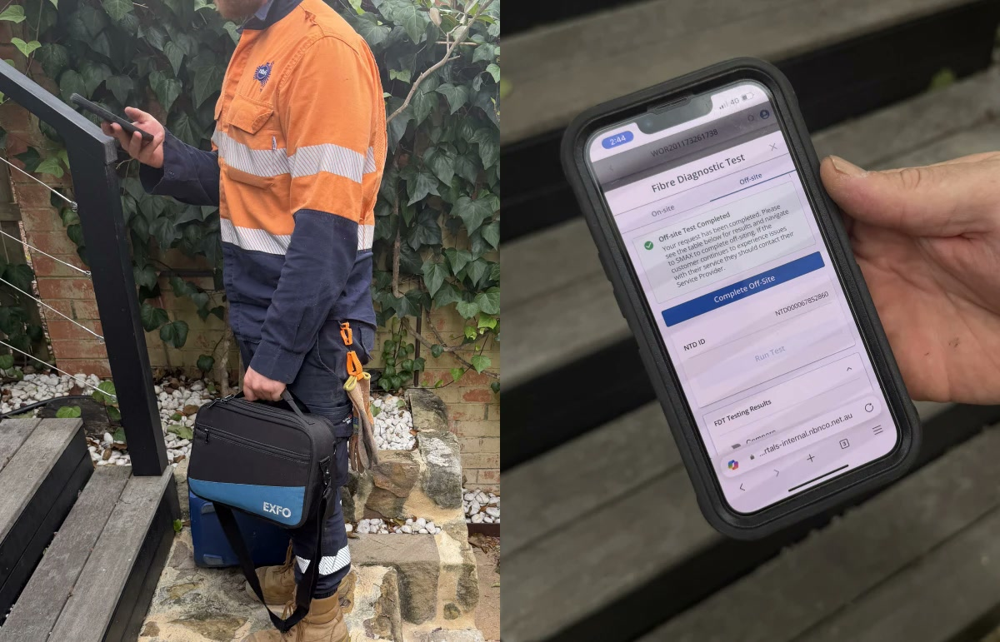

Field Toolkit
nbn's field technicians were finishing every job on a stalled, scroll-heavy app plus five other systems. I redesigned it into one app they now use across Australia.
- Problem
- 90% of technicians worked on phones and tablets, but one work order took 15+ taps of scrolling, and the app had stalled badly enough to face a funding cut.
- My role
- Product designer: interviews, journey mapping, UI audit, sketching, prototyping and testing, through to developer hand-off.
- What I designed
- One app instead of many: categories and favourites instead of scrolling, the other tools brought inside, colour-coded alerts and dark mode.
- Outcome
- My first prototype secured continued funding. 20% of technicians adopted it in its first month, and it's still in daily use nationwide.
The problem
An app that had stalled, and a product facing a funding cut
Field Toolkit is the app nbn's service field technicians use to run their work orders. When I joined, it wasn't clear the product had a future. Changes took weeks or months, the work kept happening in other tools, and the stagnation had contributed to a funding cut.
Every job bounced between the toolkit and a handful of other systems, on a phone, in the field.
Before
One job, five systems
- Work orderOpened in one system, long pages to scroll
SMAX GoFTK - TestingDiagnostics and port swaps in separate apps
UNASidecar - Site accessSearched for across systems, or chased by phone
iPACT - PhotosUploaded somewhere else, images only
Media Capture - ↻ Can't finish on site? Call support
After · Field Toolkit
Everything for the job, in one app
- HomeCategories and favourites instead of one long scroll
- Work orderKey details, site specifics and contacts in a tabbed task view
- TestingDiagnostics run inside the work order
- CalendarSynced with Microsoft Teams, with future and past jobs
- AlertsColour-coded by hazard level
"Why not build one app for it all? We don't care if the background is pale or sky blue. We just need to access and upload information quickly!"
A field technician, during interviews
The problem, sized: in FY23, Tier 1 support handled over 54,000 field interactions for manual testing and offsite activity, a fifth of all Tier 1 volume.
Research
Technicians didn't want a prettier app. They wanted one app.
I interviewed field technicians about their day, mapped their journey from planning to sign-off, audited the existing interface screen by screen, and looked at how field-service tools like Microsoft Dynamics 365 and SafetyCulture handle the same jobs.
Nearly all use was on small screens, but the app was long pages of scrolling with no clear journey.
Testing, site access and photos meant leaving the app, and often calling support to finish.
Inconsistent type, failed contrast and hazard alerts that all looked the same. Technicians asked for dark mode for long shifts.
Key decisions
Three calls that shaped the app
Categories and favourites, instead of one long scroll
With 90% of use on phones and tablets, the long single page was the biggest source of friction. I grouped tools into categories, let technicians pin the apps they use most, and turned the work order into a tabbed view with the key details first.


On tabletsThe extra width became a split view: categories on the left, results on the right, as in the tablet prototype at the top of this page, so technicians never lose their place.
Bring the tools in, instead of sending technicians out
70% of technicians relied on other tools to finish a job. Rather than add another app, I brought those journeys inside the work order: test summaries, media capture, site specifics, event history and related documents, and synced the calendar with Microsoft Teams so jobs sat alongside everything else in their day.


Trade-offDesigning the embedded testing was the easy part. Aligning with engineers on the technical approach took time and careful problem-solving.
Accessible by default: colour-coded alerts and dark mode
The audit found failed contrast, tiny text and hazard alerts technicians had to read closely to judge their urgency. I rebuilt the app on nbn's design system to WCAG standards, colour-coded alerts by hazard level, and added the dark mode technicians asked for.

"Nice one, you've killed it with dark mode."
Stewart Allan, Product Lead, nbn
Standard on every featureDesktop and dark mode designs became fixed steps in my process for every feature, not extras added at the end.
Outcome
A prototype that kept the product alive
My first prototype cycle secured continued funding, with a renewed vision for the toolkit to handle all of a technician's admin in one place. After launch, 20% of technicians adopted it within the first month, and usage kept growing as more workflows moved in.

"Though Agnes joined the team in late May, I've heard lots of great feedback from the nbn client (architect, product lead / owner, my engineering team) on how they were impressed… Agnes is great at absorbing the ideas from different directions, understanding how to address the core problem statement, and proposed the compelling mobile-first, brand new UX."
Ming Fan, Senior Manager, Accenture"Just wanted to reach out and say a big congratulations for the Field Toolkit V2 launch this week. My product leads have been extremely outgoing about your positive impact, influence and expertise, which has put this capability in a great position for the pilot."
Matthew Sellick, Executive Manager, Portfolio Governance and Delivery, nbnResults
- First prototype secured continued funding
- 20% of technicians adopted it in the first month
- Still in daily use across Australia
Reflection
What I took away
- Ambiguity is a reason to prototype, not wait. With the product's future unclear, an early prototype did more to win alignment and funding than any deck.
- Hard problems need engineers in the room early. Embedding testing only worked because we solved the technical approach together.
- Question the acceptance criteria. Prioritising what technicians actually needed, not just what was written down, is why it became widely adopted.


 5
5